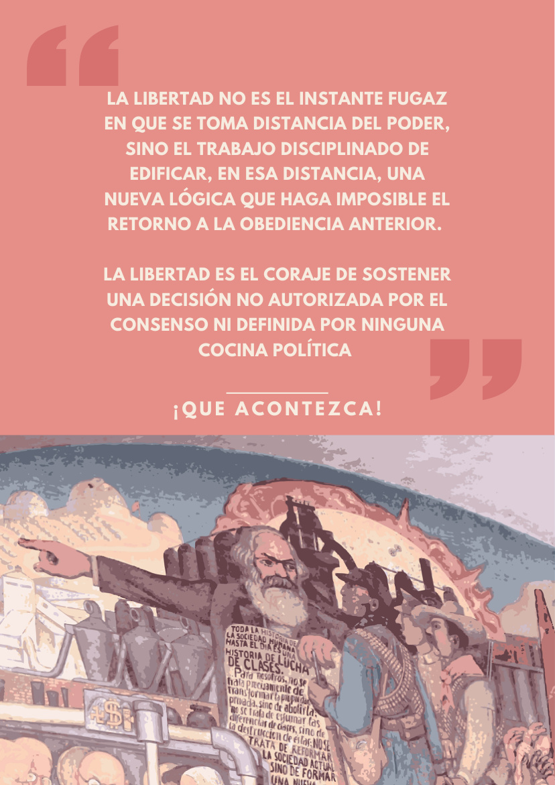

Mujer y trabajo
«Todas las mujeres somos trabajadoras. Asalariadas, independientes, informales o dueñas de casa…»
Página de síntesis · Sección II
Fin de la división jerárquica del trabajo: que nadie quede asignado de por vida al trabajo manual ni al intelectual.
Aquí circula la discusión sobre quién piensa y quién ejecuta: la formación de los propios trabajadores, la educación convertida en mercancía, la cultura como primer producto global del capital, el cuerpo de las mujeres como trabajo no nombrado.
«Solo hay libertad real si nos desprendemos de (…) la división del trabajo manual e intelectual.»
— Boletín N°3 · Tiempos de libertad, contratapa · leer en el boletín
«Reactivar la intensidad de esa otra forma: la indagación desinteresada, la autoeducación popular, el pensamiento colectivo.»
— Boletín N°3 · ¿Qué es una educación por verdades? · leer en el boletín
La Idea del comunismo no son cuatro principios sueltos: son los cuatro anudados, o ninguno. Leemos este punto por separado solo para ordenar la discusión; la pregunta que queda siempre abierta es ¿qué pasa con los otros principios en este punto? Por ejemplo, lo que hoy ocurre en Burkina Faso con Ibrahim Traoré: avanza en elementos que podrían considerarse socialistas y, al mismo tiempo, castiga con cárcel la homosexualidad. Leído con los cuatro principios anudados, eso no es una contradicción retórica: es un diagnóstico.

«Todas las mujeres somos trabajadoras. Asalariadas, independientes, informales o dueñas de casa…»
«Las dirigencias están elaborando acciones conjuntas para ir en defensa especialmente de la Educación Pública chilena…»
«El capitalismo fue y sigue siendo la primera cultura global…»
«Reactivar la intensidad de esa otra forma: la indagación desinteresada, la autoeducación popular, el pensamiento colectivo…»